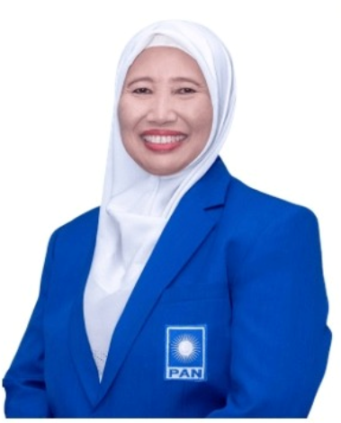

Tentang Saya
Mohon Do'a Restu dan Dukungannya.

CALEG DPRD KOTA NOMOR URUT 2.
Daerah Pemilihan 4, Danurejan, Gondokusuman.
- Lahir: 31 Mei 1962
- Website: www.sitiasfiyatunindrayati.com
- Kota: Yogyakarta
- Agama: Islam
- Pendidikan: S2
- Instagram: @sitiasfiyatunindrayati
Resume
Penghargaan
Piagam Penghargaan dari TP PKK DIY 2023
Pengabdian Kepada Pemda DIY 2021
Piagam Purna Tugas RW 2015
Piagam Yuri MTQ-CCA Pleret 2011
Certificate of Award Pembina Drum Band 2011
SATYA LANCANA SATYA XX TH 2008
Piagam Guru Berprestasi I Dompet Dhuafa 2007
Piagam Guru Berprestasi II SLTP Bantul 2003
Riwayat Jabatan
Ketua Pimpinan Cabang 'Aisyiyah Danurejan 2013 - 2023'
Ketua PKBM Surya Kelana 2007 - Sekarang
Ketua Pengajian Nur Hidayah se Kelurahan Suryatmajan 2018 - Sekarang
Majelis Hukum dan Hak Asasi Manusia PDA Kota Yogyakarta 2015 - 2023
Ketua Mitra Keluarga Kecamatan Danurejan 2006 - Sekarang
Komite Tetap SMPN 3 Yogyakarta 2003 - Sekarang
Majelis Pendidikan MTP IPHI Kota Yogyakarta 2020 - Sekarang
Pembina MTP IPHI Danurejan 2021 - Sekarang
Badan Penasehatan Pembinaan dan Pelestarian Perkawinan 2022 - Sekarang
Wakil Majlis Ta'lim Perempuan IPHI Kota Yogya 2011 - 2020
Wakil Kepala Sekolah Urusan Kesiswaan SMAN 7 Yogyakarta 2017 - 2019
Bendahara Forum Wakil Kepala Sekolah SMA Kota Yogyakarta 2017 - 2019
Bendahara BOSDA SMAN 7 Yogyakarta 2013 - 2017
Bendahara JPD SMAN 7 Yogyakarta 2014 - 2020
Riwayat Kursus/Diklat
Sekolah Wirausaha ‘Aisyiyah - PWA DIY Th 2021
Diskusi Tokoh “Mengenang Sosok dan Pemikiran Darwin Harsono, Sang Guru dan Pejuang Hukum Islam - Derektorat Pembinaan Agama Islam UII Th 2021
Pembimbing pada Program Praktik Pengalaman Lapangan - Universitas PGRI Yogyakarta Th 2020
Seminar & Workshop “Pengasuhan Anak di Era Digital dan Pendampingan Anak yang Berhadapan dg Hukum”- PWA DIY 2020
Menangkal Kenakalan Remaja Untuk Meraih Generasi Berkualitas dan Berkemajuan -Lembaga Cegah Kejahatan Indonesia Th 2019
Seminar Nasional: Moderasi Beragama dan Upaya Menangkal Radikalisme” - Al Wasat Institute Th 2019
Pelatihan Paralegal “Peran ‘Aisyiyah dalam Pendampingan Hukum Masyarakat” - UMY 2019
Pembimbing pada Program Praktik Pengalaman Lapangan - Universitas PGRI Yogyakarta Th 2019
Workshop “Students Character Building in Education Era 4.0: Literacy on Preventing Cyber Buillying: - Pendidikan Bahasa Inggris UII Th 2019
Seminar ‘Menggali, Mengembangkan & Menanamkan Nilai – nilai Sejarah Pendidikan Muhammadiyah sebagai Implementasi Penguatan Pendidikan Karakter - Majlis DIKDASMEN PDM Sleman Th 2018
Workshop “Strategi Mengarahkan Minat dan Bakat Generasi Z di Era Mileenial - Fak Psikilogi & Ilmu Sosial Budaya UII Th 2018
Pembimbing pada Program Praktik Pengalaman Lapangan” - Universitas PGRI Yogyakarta Th 2018
Workshop Talent Scouting - UNY Th 2017
Workshop “Psikologi Perkembangan Remaja” - Fakultas Psikologi & Ilmu Sosial UII Th 2017
Pembimbingdalam Kegiatan Jisshu II (magang) - Pendidikan Bahasa Jepang UMY Th 2017
Bimbingan Teknis Calon Asesor Penilaian Kerja Guru - Dikpora DIY Th 2017
Seminar Nasional “Wacana Penerapan Kurikulum Nasional” - Universitas PGRI Yogyakarta Th 2015
Seminar & Workshop Internasional “Guidance and Counseling Based on The Character” - UPY Th 2015
Sosialisasi Cagar Budaya dan Aspek – aspek Kepurbakalaan - Balai Pelestarian Cagar Budaya Yogyakarta Th 2014
Guru Pembimbing Program Pengalaman Lapangan - Universitas PGRI Yogyakarta Th 2014
Workshop “Penguatan Implementasi Kurikulum 13 SMA/SMK Kota Yogyakarta - Pemkot Kota Th 2014
Workshop “Bimbingan Karir dan Perubahan Paradigma Sosial” - Teknik Kimia UII Th 2014
Pelatihan Implementasi Kurikulum 2013 bagi Guru Bimbingan dan Konseling Jenjang SMA dan SMA kota Yogyakarta - Lembaga Penjaminan Mutu Pendidikan Daerah Istimewa Yogyakarta Th 2013
Seminar Nasional “Bersama Kita Wujudkan Lanjut Usia Berguna, sejahtera dan Bahagia” - JALA Indonesia Th 2013
“Penataan Kelembagaan PKBM” - Direktorat Pembinaan Pendidikan Masyarakat Th 2013
Seminar Nasional “Menjadi Tuan Rumah di Negeri Sendiri: Memperdayakan Rakyat Untuk Aktif Menggerakkan Industrialisasi Nasional” - UTY Th 2013
Diskusi Publik “Menuju Pangan Jajanan Anak Sekolah yang Aman, Bermutu dan Bergizi” - Direktorat Jendral Informasi dan Komunikasi Publik Th 2013
“Pelatihan Posdaya dan Kebun Bergizi” - Haryono Suyono Center Th 2012
“Pembekalan Konselor Kekerasan Dalam Rumah Tangga (KDRT)” - Pemerintah Kota Yogyakarta Th 2012
Penataan dan Penguatan Manajemen PKBM - P3M APMD Th 2011
“Penguatan Kapasitas Muslimah Sebuah Upaya Menuju Keluarga Sakinah Kaitannya dengan Pendidikan dan Kesehatan - PUSHAM UII Th 2011
“Aplikasi Tes Bakat, Minat dan Assesment Psikologi serta Manajement Sekolah” - Lembaga Pelatihan dan Informatika Paramadina Th 2011
Seminar “Manajemen Bimbingan Konseling di Sekolah” - Dinas Pendidikan Dasar Kabupaten Bantul Th 2010
.Diklat “ Pengelolaan Keuangan Daerah bagi Bendahara atau Penanggung jawab Pengelolaan Dana BOS, BOP dan DAK” - Setda Bantul Th 2009
Pelatihan Nasional “Cara Mutahir Membaca Potensi Anak Didik Serta Strategi Melejitkan Prestasi” - Edwise Edutaiment Th 2009
“Pelatihan Penulisan Karya Tulis Ilmiah” - PUSDIMAS LPPM UPN Yogyakarta Th 2009
Seminar Nasional “Guru Masa Depan, Profesional dan Tanggap Tehnologi Informasi dalam Pembela Jaran” - Dinas Pendidikan Dasar Bantul Th 2009
Talk Show “Smart Parent for Smart Kids” - FAST Th 2008
Pelatihan Paralegal Perempuan - LABH Th 2008
Diklat “Pengelola PKBM” - BPKB DIY Th 2008
“Sertifikasi dan Peningkatan Mutu Guru dalam Rangka Menyongsong Pendidikan Masa Depan - Universitan PGRI Yogyakarta Th 2008
Pelatihan cara Belajar Fisika yang Efektif dan Menyenangkan” - Universitas Multimedia Nusantara Th 2008
Seminar “Rahasia Membuat Murid Ketagian Belajar” - Kompas Gramedia Th 2008
Cegah dan Tanggulangi Napsa Berbasis Keluarga - Universitas Taman Siswa – Tahun 2008
Diklat “Tata Cara Pengisian SPT Tahunan”- Lembaga Pengembangan Perpajakan Indonesia Th 2007
Diklat “Pembahasan Ketentuan Umum Perpajakan Th 2007, Sistem Pemeriksaan dan Penyidikan Pajak”
Konggres Nasional Sekolah Unggul V “Strategi Membangun Keunggulan dalam Keterbatasan”
Pelatihan Pendidik PAUD – Tim PKK Suryatmajan Tahun 2007
Pelatihan Manajemen Tanggap Bencana” - Bumi Pengembangan Insani - Th 2006
Pelatihan Konseling Bagi Relawan Mitra Keluarga PKK Tim Penggerak Kota Yogyakarta Th 2006
Seminar“Diseminasi Hasil Penelitian Tindakan Kelas” - Dinas Pendidikan dan Kebudayaan Bantul Th 2005
Diklat “Peningkatan Kualitas Guru” - Dinas Pendidikan dan Kebudayaan Kabupaten Bantul Th 2005
Diklat “Komputer Program Microsoft Office ( Ms Word, Ms Excel) Th 2005
Diklat “Program Baca Tulis untuk Guru SLTP” - Dinas Pendidikan DIY Th 2002
Seminar “Meningkatkan Kualitas Pembelajaran Guru SLTP melalui Pendekatan Manajemen Berbasis Sekolah” UNY Tahun 2002
Workshop “Strategi Penanggulangan Napza di Sekolah” Kanwil Depdiknas DIY, Th 2001
Diklat “Musyawarah Guru Mata Pelajaran “Depdikbud Kabupaten Probolinggo Th 1997
Penataran dan Pelatihan MGMP IPA - Kandepdikbud Kodya Probolinggo, Th 1997
Diklat “Latihan Kerja Guru IPA” - Bidang Dikmenum Kanwil Jawa Timur Th 1992
“Penataran Profesi Guru Ilmu Pengetahuan Alam” Bidang Dikmenum Jawa Timur, Th 1989
“Penataran Profesi Guru Ilmu Pengetahuan Alam” Bidang Dikmenum Jawa Timur, Th 1988
Penataran Profesi Guru Ilmu Pengetahuan Alam Bidang Dikmenum Jawa Timur, Th 1987
Kursus Pendidikan Kesehatan Jiwa Remaja- Pimpinan Pusat “Aisyiyah Th 1980
Riwayat Pendidikan
S2: Komunikasi Konseling Islam
Universitas Muhammadiyah Yogyakarta
S1: Psikologi Pendidikan dan Bimbingan
IKIP PGRI Malang
D1: Matematika Ilmu Pengetahuan Alam
IKIP N Yogyakarta
SMA : SMA Muhammadiyah 2 Yogyakarta
Yogyakarta
SMP: SMP Negeri 3 Yogyakarta
Yogyakarta
SD: SD Muhammadiyah Purwodiningratan 1 Yogyakarta
Yogyakarta
TK: TK ABA Notoprajan Yogyakarta
Yogyakarta
Riwayat Pekerjaan
Guru Bimbingan Konseling
2012 - 2022
SMAN 7 Yogyakarta
Guru Fisika, Matekatika dan BK
1999 - 2012
SMPN 3 Pleret
Guru MIPA
1985 - 1999
MTs Raudlatus Sholihin Kraksaan Probolinggo
Guru IPA
1984 - 1999
SMPN 2 Kraksaan


{kind=link}
Cara Memilih